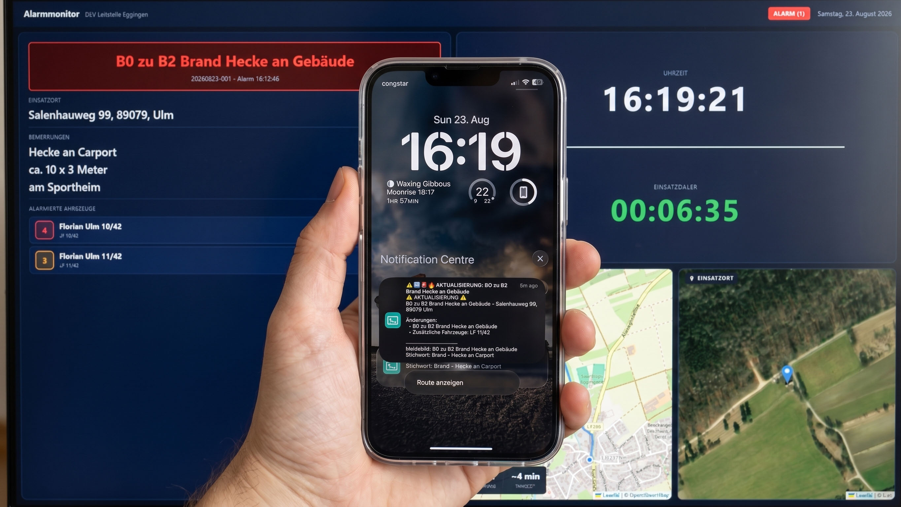

ILS Eggingen ist eine Übungsleitstelle zum Simulieren von Alarmierung und Einsatzführung – gedacht für Jugendfeuerwehren, Ausbildung und Veranstaltungen wie Tage der offenen Tür. Diese Seiten erklären die Benutzung: Zugang bekommen, die eigene Übungsleitstelle einrichten und Übungseinsätze durchführen.

Alarmierung auf dem Monitor – und in Echtzeit als Push-Benachrichtigung auf dem Handy.